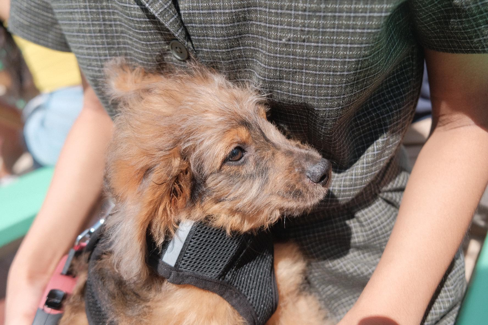
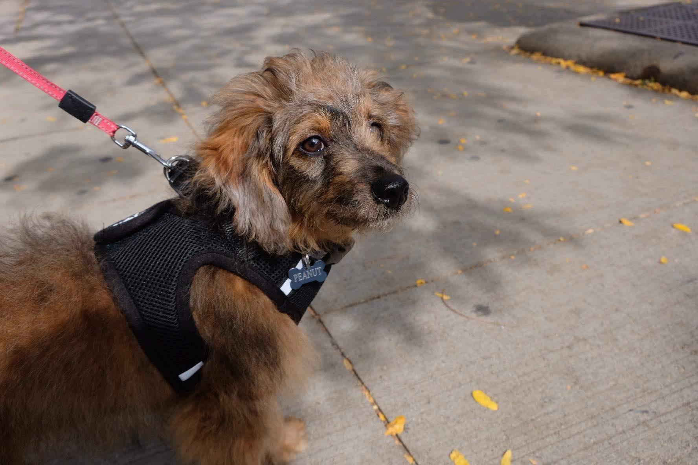
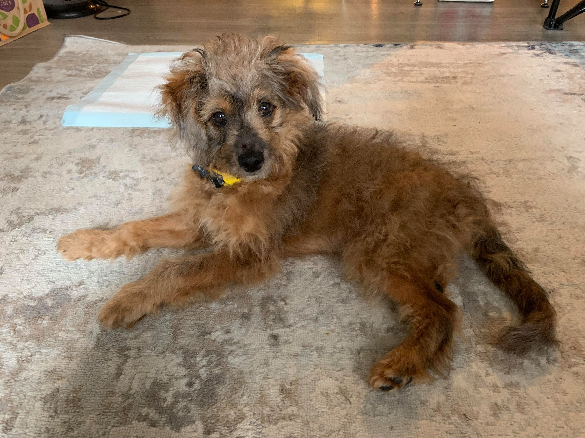

Quick facts about Peanut
- Gender: male
- Breed: Mini Australian Shepherd and Poodle mix
- Age: 20 weeks old
- Weight: 14 pounds
- Favorite food: Chicken, peanut butter, strawberry

Peanut's family
- Dad: Brown Toy Poodle
- Mom: Black/white Australian Shepherd
- Hooman: Emily
- Girlfriend: Winnie the Cavalier King Charles Spaniel
- Best friend: Archie the Bernedoodle

About Aussiedoodles
Mini Aussiedoodles can grow up to 25 pounds. Their common characteristics include affectionate, loyal, and extremely intelligent. Because they are a very energetic breed, they require at least 40 minutes a day of exercising. More info about Aussiedoodles can be found here!
A Day in Life
Peanut loves to start his day with many cuddles and belly rubs. He then begins his busy day of chasing stuffed bones, zooming around the apartment, and stealing slippers. In the afternoon he goes on dates with Winnie. When the sun slowly sets, Peanut falls asleep on the couch, watching TV with his hoomans.